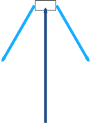
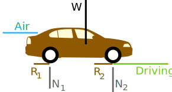
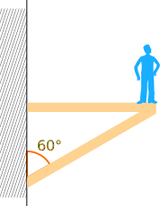
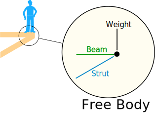
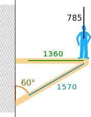
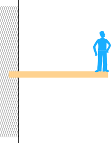
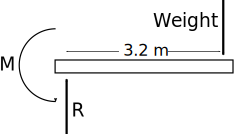
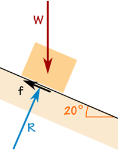
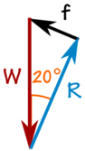
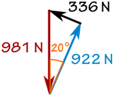

Force Calculations

Force is push or pull.
Forces on an object are usually balanced (if unbalanced the object accelerates):
 |
 |
|
| Balanced | Unbalanced | |
|---|---|---|
| No Acceleration | Acceleration |
Example: The forces at the top of this bridge tower are in balance (it is not accelerating):

The cables pull downwards equally to the left and right, and that is balanced by the tower's upwards push. (Does the tower push? Yes! Imagine you stand there instead of the tower.)
We can model the forces like this:

And when we put them head-to-tail we see they close back on themselves, meaning the net effect is zero:

The forces are in balance.
Forces in balance are said to be in equilibrium: there is also no change in motion.
Free Body Diagrams
The first step is to draw a Free Body Diagram (also called a Force Diagram)
Free Body Diagram: A sketch where a body is cut free from the world except for the forces acting on it.
In the bridge example the free body diagram for the top of the tower is:

Free Body Diagram
It helps us to think clearly about the forces acting on the body.
Example: Car on a Highway
What are the forces on a car cruising down the highway?
The engine is working hard, so why doesn't the car continue to accelerate?
Because the driving force is balanced by:
- Air resistance (put simply: the air resists being pushed around),
- Rolling resistance, also called rolling friction (the tires resist having their shape changed)
Like this:

Free Body Diagram
W is the car's weight,
R1 and R2 are the rolling resistance of the tires,
N1 and N2 are the reaction forces (balancing out the car's weight).
Note: steel wheels (like on trains) have less rolling resistance, but are way too slippery on the road!
Calculations
Force is a vector. A vector has magnitude (size) and direction:

We can model the forces by drawing arrows of the correct size and direction. Like this:
Example: Admiring the View
Brady stands on the edge of a balcony supported by a horizontal beam and a strut:

He weighs 80kg.
What are the forces?
Let's take the spot he is standing on and think about the forces just there:

His Weight
His 80 kg mass creates a downward force due to Gravity.
Force is mass times acceleration: F = ma
The acceleration due to gravity on Earth is 9.81 m/s2, so a = 9.81 m/s2
F = 80 kg × 9.81 m/s2
F = 785 N
The Other Forces
The forces are balanced, so they should close back on themselves like this:

We can use trigonometry to solve it.
Because it is a right-angled triangle, SOHCAHTOA will help.
For the Beam, we know the Adjacent, we want to know the Opposite, and "TOA" tells us to use Tangent:
tan(60°) = Beam/785 N
Beam/785 N = tan(60°)
Beam = tan(60°) × 785 N
Beam = 1.732... × 785 N = 1360 N
For the Strut, we know the Adjacent, we want to know the Hypotenuse, and "CAH" tells us to use Cosine:
cos(60°) = 785 N / Strut
Strut × cos(60°) = 785 N
Strut = 785 N / cos(60°)
Strut = 785 N / 0.5 = 1570 N
Solved:

Interesting how much force is on the beam and strut compared to the weight being supported!
Torque (or Moment)
What if the beam is just stuck into the wall (called a cantilever)?

There is no supporting strut, so what happens to the forces?
The Free Body Diagram looks like this:

The upwards force R balances the downwards Weight.
With only those two forces the beam will spin like a propeller! But there is also a "turning effect" M called Moment (or Torque) that balances it out:
Moment: Force times the Distance at right angles.
We know the Weight is 785 N, and we also need to know the distance at right angles, which in this case is 3.2 m.
M = 785 N x 3.2 m = 2512 Nm
And that moment is what stops the beam from rotating.
You can feel moment when holding onto a fishing rod.
As well as holding up its weight you have to stop it from rotating downwards.
Friction
Box on a Ramp

The box weighs 100 kg.
The friction force is enough to keep it where it is.
The reaction force R is at right angles to the ramp.
The box is not accelerating, so the forces are in balance:

The 100 kg mass creates a downward force due to Gravity:
W = 100 kg × 9.81 m/s2 = 981 N
We can use SOHCAHTOA to solve the triangle.
Friction f:
sin(20°) = f/981 N
f = sin(20°) × 981 N = 336 N
Reaction N:
cos(20°) = R/981 N
R = cos(20°) × 981 N = 922 N
And we get:

Tips for Drawing Free Body Diagrams
- Draw as simply as possible. A box is often good enough.
- Forces point in the direction they act on the body
- straight arrows for forces
- curved arrows for moments
Sam and Alex Pull a Box
The calculations can sometimes be easier when we turn magnitude and direction into x and y:
 |
<=> |  |
| Vector a in Polar Coordinates |
Vector a in Cartesian Coordinates |
You can read how to convert them at Polar and Cartesian Coordinates, but here is a quick summary:
| From Polar Coordinates (r,θ) to Cartesian Coordinates (x,y) |
From Cartesian Coordinates (x,y) to Polar Coordinates (r,θ) |
|
|---|---|---|
|
|
Let's use them!

Example: Pulling a Box
Sam and Alex are pulling a box (viewed from above):
- Sam pulls with 200 Newtons of force at 60°
- Alex pulls with 120 Newtons of force at 45° as shown
What is the combined force, and its direction?
Let us add the two vectors head to tail:

First convert from polar to Cartesian (to 2 decimals):
Sam's Vector:
- x = r × cos( θ ) = 200 × cos(60°) = 200 × 0.5 = 100
- y = r × sin( θ ) = 200 × sin(60°) = 200 × 0.8660 = 173.21
Alex's Vector:
- x = r × cos( θ ) = 120 × cos(−45°) = 120 × 0.7071 = 84.85
- y = r × sin( θ ) = 120 × sin(−45°) = 120 × -0.7071 = −84.85
Now we have:

Add them:
(100, 173.21) + (84.85, −84.85) = (184.85, 88.36)
That answer is valid, but let's convert back to polar as the question was in polar:
- r = √ ( x2 + y2 ) = √ ( 184.852 + 88.362 ) = 204.88
- θ = tan-1 ( y / x ) = tan-1 ( 88.36 / 184.85 ) = 25.5°
And we have this (rounded) result:

And it looks like this for Sam and Alex:

They might get a better result if they were shoulder-to-shoulder!